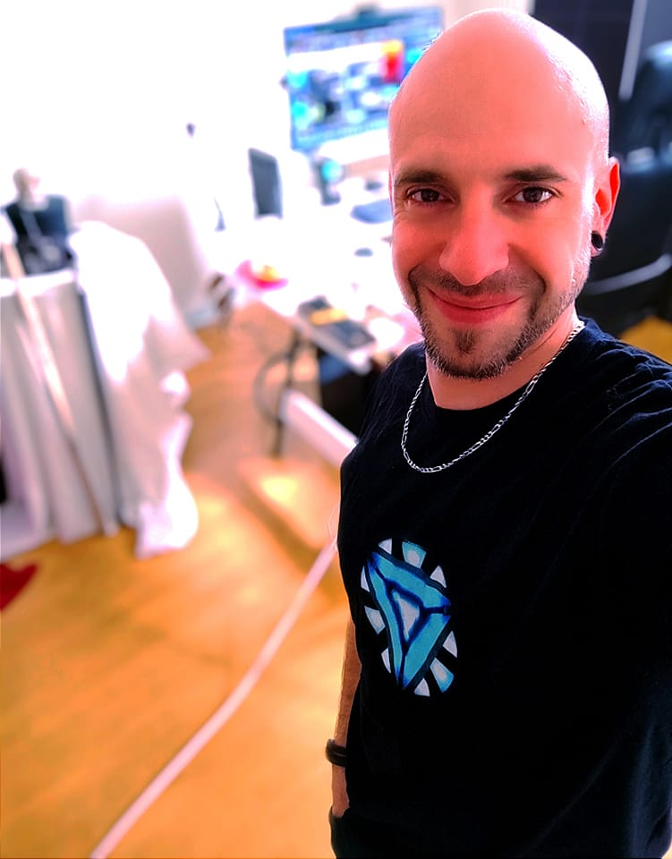

Romain Tonolli
Technicien industriel formé sur le terrain, spécialisé en qualité, production, outillage et maintenance. J’allie la rigueur du travail bien fait, la précision technique, l’expérience humaine et une vraie capacité d’adaptation aux outils modernes.
Document justificatif disponible au téléchargement direct pour vérification du parcours professionnel.
Contact
Profil
Je suis un professionnel sérieux, autonome et curieux, avec une expérience solide en environnement industriel exigeant.
Je suis habitué aux procédures qualité, à la précision, à la résolution de problèmes techniques et au travail bien fait.
Vision & état d’esprit
Je suis conscient d’être issu d’une génération qui a connu une évolution forte du monde du travail et des technologies. J’ai appris à construire avec des bases solides, où l’effort, la rigueur et le travail bien fait étaient essentiels.
Aujourd’hui, je fais le choix de ne pas rester figé dans cette expérience, mais de la faire évoluer. Je développe en permanence ma capacité d’adaptation aux nouveaux systèmes technologiques, en combinant mon vécu, mon intelligence d’analyse et ma volonté de progresser.
Je cherche à avancer avec équilibre : garder ce qui fait la force d’un professionnel expérimenté, tout en intégrant les outils modernes pour rester performant, efficace et en constante évolution.
Compétences clés
Expérience principale
J’ai évolué en interne après avoir été formé sur plusieurs postes de fabrication dans un atelier spécialisé dans les prothèses chirurgicales par procédé de cire perdue. Cette progression m’a permis de passer d’un poste d’opérateur polyvalent à des compétences de technicien outilleur terrain.
Fabrication & procédé cire perdue
- Fabrication et préparation de pièces en cire pour prothèses chirurgicales.
- Travail sur le procédé de cire perdue destiné à la coulée de chrome cobalt.
- Création de modèles en cire servant à former l’espace moulé dans le revêtement DIP.
- Préparation des moules recevant ensuite la coulée de métal en fusion.
- Respect des exigences qualité liées au secteur médical.
Outillage & maintenance de moules
- Supervision de plusieurs postes de fabrication en atelier cire.
- Maintenance complète de moules d’injection avec appareillage complet.
- Démontage, nettoyage, réparation et remontage des moules.
- Réparation des mottes et empreintes moulées de différentes prothèses.
- Soudage laser pour ajout de matière et réajustement de précision.
- Essais de conformité sur presses d’injection.
- Diagnostic et correction des défauts liés aux moules et à la production.
Compétences industrielles
- Contrôle qualité industriel : visuel, dimensionnel, traçabilité.
- Production industrielle en atelier technique.
- Maintenance, démontage, nettoyage et remontage de moules d’injection.
- Réparation et ajustement d’empreintes de moules.
- Soudage laser pour ajout de matière et correction de précision.
- Essais et validation conformité sur presses d’injection.
- Procédé de fonderie à la cire perdue.
- Travail sur pièces destinées au secteur médical.
- Respect des procédures, des consignes qualité et des standards de fabrication.
- Compréhension rapide des environnements industriels exigeants.
Compétences numériques & informatique
Je possède une forte appétence pour l’informatique, aussi bien en hardware qu’en software. Je suis capable de monter, diagnostiquer et optimiser des systèmes informatiques complets.
Je m’intéresse également aux technologies d’intelligence artificielle, que j’utilise comme outil d’analyse, d’apprentissage et d’amélioration continue dans mon quotidien professionnel.
- Montage et maintenance informatique hardware.
- Diagnostic de pannes systèmes.
- Utilisation avancée des outils numériques.
- Compréhension et utilisation des outils d’intelligence artificielle.
- Adaptation rapide aux nouveaux environnements technologiques.
- Capacité à apprendre seul, tester, comprendre et optimiser des outils numériques.
Approche moderne & outils numériques
Je m’inscris dans une démarche d’évolution constante, en intégrant les outils numériques modernes dans mon quotidien. L’utilisation des intelligences artificielles me permet d’analyser, structurer et améliorer mes compétences de manière autonome.
Cette approche me permet de prendre du recul sur mon travail, d’optimiser mes méthodes et de développer une vision plus globale des systèmes dans lesquels j’évolue. Je considère ces outils comme un levier d’amélioration continue, au service de la performance, de la compréhension et de la progression professionnelle.
Approche humaine & pédagogique
Formé en éthologie et en comportementalisme canin, j’ai développé une capacité d’observation fine des comportements et des mécanismes d’apprentissage. Cette compétence me permet aujourd’hui d’avoir une approche pédagogique claire, structurée et efficace dans un environnement industriel.
Je suis capable de comprendre rapidement les situations, d’analyser les réactions humaines et de transmettre un savoir de manière adaptée. Cette sensibilité humaine est un véritable atout pour travailler en équipe, accompagner une personne en formation et évoluer dans des environnements exigeants.
Formation
- Bac Pro Productique Mécanique.
- BEP / CAP Microtechnique et Micro-mécanique.
- Formation relation client ENGIE.
- Formation terrain en outillage et atelier cire.
- Formation en éthologie / comportementalisme canin.
Atouts
- Rigueur et sens du détail.
- Autonomie sur poste technique.
- Bonne capacité d’apprentissage.
- Culture du travail bien fait.
- À l’aise avec l’informatique et les systèmes.
- Capacité à transmettre et former.
- Esprit analytique et curiosité technique.